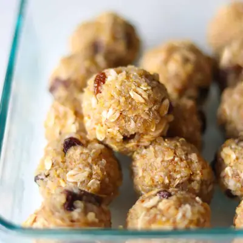

Almond Butter Protein Balls

Ingredients
- 1 cup cooked quinoa (cooled)
- 1/2 cup rolled oats (50g)
- 1/2 cup almond butter
- 1/4 cup honey or maple syrup
- 2 tablespoon ground flaxseeds (or chia seeds)
- 1/4 cup unsweetened shredded coconut
- 1/4 cup dried fruit or chocolate chips
- 1 teaspoon vanilla extract (optional)
- 1/2 teaspoon cinnamon
Steps
- In a large bowl, add all the ingredients. Mix well using a spatula or your hands until evenly combined. Refrigerate for at least 30 minutes to firm up.
- Scoop about 1-2 tablespoons of the mixture and roll into small balls using slightly damp or wet hands.
- Store in an airtight container in the fridge for up to a week or in the freezer for up to 3 months.
Recipe by Min Kwon · Kidfriendly Meals, from MJ and Hungryman. Saved here for personal use; the original has the full notes, tips and photos. Open original